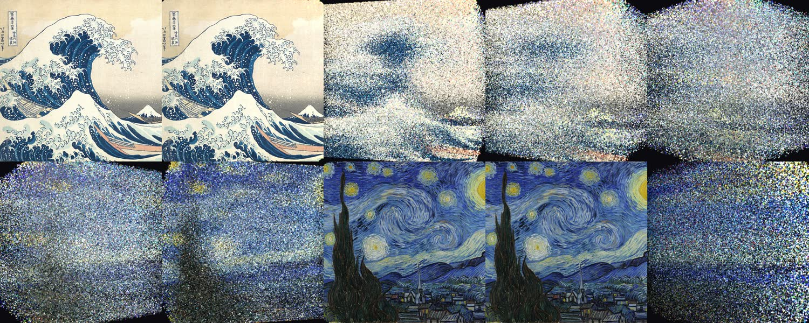
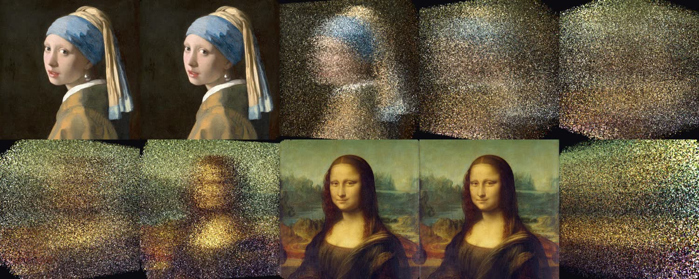
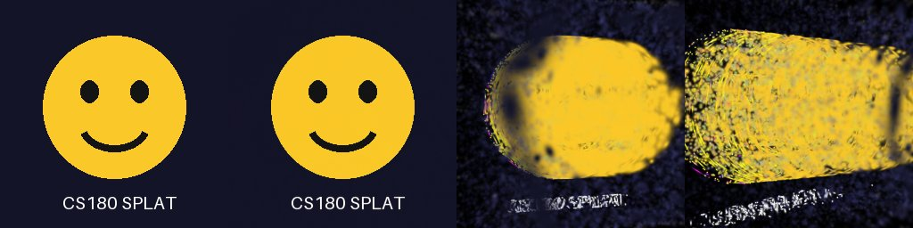
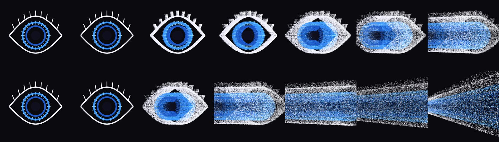
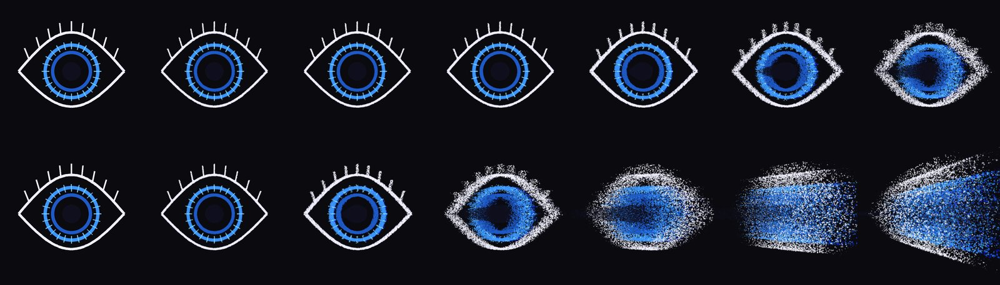
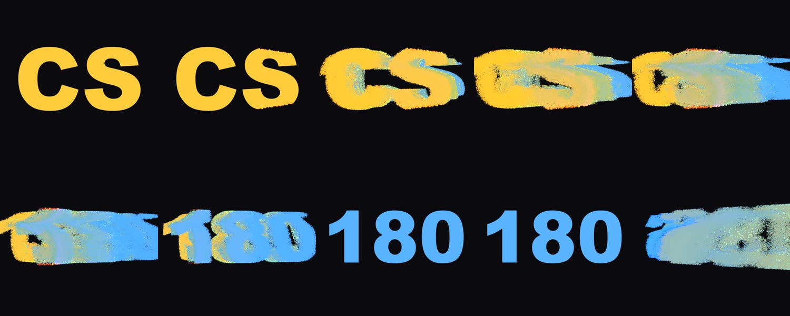

Hidden in Plain Sight
Famous paintings, hidden inside 3D clouds of coloured specks. From almost everywhere you see noise. Stand in exactly the right spot and a masterpiece snaps into place.
Runs in your browser. Wander around and hunt, or press Show me a painting.
 From the start: noise
From the start: noise Secret spot 1: The Great Wave
Secret spot 1: The Great Wave Halfway round: noise again
Halfway round: noise againFind the paintings
Each scene is one cloud of specks. Every painting in it has its own secret viewpoint. Pick a scene and go looking.
Each scene is about 30 MB and takes a few seconds to load. Works on phones too.
A painting, taken apart along lines of sight
The trick is centuries old: painters and street artists hide images that only line up from one spot. We do it with tiny specks floating in 3D.
-
Choose a spot
Pick a secret viewpoint and the painting that should appear there.
-
Scatter it in depth
Every pixel becomes a speck of its colour, pushed to a random depth along that pixel's line of sight.
-
Only one spot lines up
From the spot, each speck lands on its pixel. Step aside and near and far specks slide past each other.
A toy version seen from above: 7 picture dots, 4 specks each. Real scenes use about 300,000 specks, and a short optimisation fine-tunes each speck's colour, opacity and size.
Two paintings, one cloud
One painting per cloud leaves a tell: from the side, the specks form a tube along the secret camera's lines of sight. So we hide a second painting a quarter turn away. A speck is only placed where camera A's line of sight through painting A crosses camera B's line of sight through painting B, so it lands on a pixel of both. This is stereo triangulation run backwards, and the same "visual hull" idea as space carving and Shadow Art.
Each speck gets a colour that depends slightly on viewing direction, so it can show A's colour toward A and B's toward B. One short gsplat fit on both views cleans up the rest.

What we optimise is what you see
Browser splat renderers filter tiny splats differently from gsplat. We set Spark to gsplat's "classic" filter (preBlurAmount 0.3, blurAmount 0) so specks keep their trained brightness.
Keep the specks tiny
Level-of-detail would merge small specks into blobs, so it is off. Speck centres stay 32-bit; 16-bit centres make far specks jitter.
Light enough for the web
About 310k Gaussians per scene, roughly 30 MB, rendered live in the browser with three.js and Spark.
Crisp from the spot, scrambled in between
We orbit a camera around each cloud and render every few degrees. The painting appears only at its own spot. Every angle in between is noise, and the tube from the single-painting version is gone.


| Scene | Specks | Sharpness at each secret spot (SSIM, 1 = perfect) |
|---|---|---|
| The Wave and the Night | 306k | The Great Wave 0.93 · The Starry Night 0.90 |
| Two Portraits | 311k | Girl with a Pearl Earring 0.92 · Mona Lisa 0.88 |
About 98% of each painting's pixels are covered by a speck that both cameras agree on.
How big is the secret spot?
If a painting only appears from one exact point, nobody finds it. If it appears from everywhere, it is not hidden. We measure the reveal zone: step the camera sideways or orbit it, and score how recognisable the picture still is (normalised cross-correlation over the picture's pixels; 1 is perfect, about 0 is scrambled).
Training with a slightly wobbly camera (an idea from Illusion3D) widens the zone a lot, at a small cost at the exact spot. It trades surprise for discoverability, so we report it as a knob. These numbers were measured on our single-picture test scenes (see Process); the painting scenes are next.

Into a real scene
Specks in the dark are a clean testbed. The real goal: a painting hidden inside an ordinary captured place, the Mip-NeRF 360 garden. From everywhere it looks like the garden; from one spot, a painting appears across the leaves, gravel and table.
Projection painting
No training. Recolour the garden's own Gaussians by projecting the painting from the secret spot, the way Felice Varini paints across buildings.
Optimisation
Nudge the existing Gaussians' positions, colours and opacities so the painting appears from the secret view while every normal view stays the same.
What we tried, and why we changed course
Condensed from our running process log. Each step was decided by looking at what the previous one got wrong. Early tests used simple drawings before we moved to paintings.
-
The secret view was perfect. Everything else was a blob.
Tried
40k Gaussians at random depths in front of the secret camera, fit for 600 steps to a smiley with "CS180 SPLAT".
Happened
Secret view near-perfect, but from the side a smeared yellow blob that still read as a smiley: with one view supervised, the Gaussians grew large and opaque.
Decision
Judge by the side views. Cap each speck's size, spread depths wider, place specks only on ink.

Target, secret view, orbit 0.15 rad, orbit 0.6 rad. -
The browser was quietly dimming our specks.
Tried
A static three.js + Spark viewer with a glide to the secret pose, a warmer/colder meter and a scene picker.
Found
Spark's default blur lowers opacity to compensate, darkening isolated ~1 px specks by about 27%. Level-of-detail would merge them.
Decision
Match gsplat's "classic" filter, turn off level-of-detail, keep full-precision positions.
// condensed from web/viewer.js: match gsplat's classic rasterisation new SparkRenderer({ preBlurAmount: 0.3, blurAmount: 0.0, enableLod: false, accumExtSplats: true }) -
Specks, not blobs. But the picture was extruded into a tube.
Tried
135k size-capped specks on an eye drawing's ink, depths 3 to 30 units, 1000-step fit. Variant: Illusion3D-style camera wobble.
Happened
Secret view SSIM 0.997 and side views are specks, but the cloud is the picture stretched into a tube. The wobble widened the reveal zone (SSIM at a 5% step 0.62 → 0.89).
Decision
Only place specks inside a ball around the centre. Keep the wobble as the reveal-zone knob.

A1. First column: the target. Top: sideways steps of 0 to 20%. Bottom: orbits of 0 to 120°. 
A1 with camera wobble. Same layout; the eye holds together over much larger steps. -
A ball of dust didn't help, and that taught us why.
Tried
Ball placement: each line of sight only gets specks inside a sphere, hoping side views would look like round dust.
Happened
Still streaks. Orbiting never changes a speck's row, so rows stay rows. SSIM was also fooled by the dark background, so we switched to masked NCC.
Decision
Stop tuning the dust look. Use the structure instead: make the side view show something.

A2, ball placement. From the side, the eye still reads as horizontal streaks. 
Rows stay rows. Orbiting around the vertical axis: words become three bands, the face becomes stripes. -
If the side view has structure anyway, make it a second picture.
Feedback
"The dots just form a cylinder; it doesn't seem that impressive." Fair.
Tried
Specks only where camera A sees ink in picture A and camera B, 90° around, sees ink in picture B, with direction-dependent colour and a joint fit.
Decision
Test drawings: SSIM 0.98 to 1.00 at both spots. With paintings, 0.88 to 0.93 and genuinely scrambled in between. Two-view becomes the headline.

First two-view test. "CS" from one spot, "180" a quarter turn away. Paintings came next (see Results). -
Into the garden.
Hiding a painting inside a real captured scene. See Into a real scene.
Standing on a long tradition
Anamorphic images are nearly 500 years old. Recent work makes multi-view illusions with diffusion models and hides data inside radiance fields. Here is how we relate.
| Work | What it does | How we relate |
|---|---|---|
| The AmbassadorsHans Holbein the Younger, 1533 | A stretched shape across a portrait's floor resolves into a skull from a sharp side angle. | The original idea: one picture, one viewpoint. |
| Felice Varini; Julian BeeverAnamorphic architecture and street art | Paint fragments across buildings or pavement line up from one spot. | Our planned garden "projection painting" is Varini's method applied to a captured scene. |
| Shadow ArtMitra & Pauly, SIGGRAPH Asia 2009 | A 3D sculpture whose shadows from several directions form several given images. | Our two-view scenes use the same visual-hull idea, in full colour and in an explorable scene. |
| Visual AnagramsGeng, Park & Owens, CVPR 2024 | Diffusion-generated images that change identity under flips, rotations or permutations. | 2D illusions; we work in 3D with pictures you supply. |
| Illusion3DFeng et al., 2024 | Optimises a 3D object with 2D diffusion priors so it shows different images from different angles. | Closest in spirit. We borrowed its camera wobble. We use no diffusion model: the paintings are given. |
| LookingGlassChang et al., CVPR 2025 | Generative anamorphoses revealed through a mirror, lens or warp. | Generative and 2D; ours places given paintings inside a walkable 3D scene. |
| ComplicitSplat and CLOAKHull et al., 2025 | Adversarial 3DGS scenes that look different from chosen angles, to fool object detectors. | Closest technically for real scenes; theirs targets detectors, ours is meant for people. |
| StegaNeRF and GS-HiderICCV 2023; NeurIPS 2024 | Hide invisible data in radiance fields, recoverable only with a learned decoder. | The opposite goal: ours is visible to anyone standing in the right spot. |
What is ours
- Two-view anamorphosis in 3DGS: two full-colour paintings in one cloud of specks, each from its own viewpoint, by placing specks where both cameras' lines of sight agree and fitting view-dependent colour.
- A training-light pipeline (one short gsplat fit on a single Colab GPU) and a browser renderer matched to it.
- A reveal-zone study with a masked-NCC score and camera wobble as a knob.
What is not
- The anamorphosis idea itself, and the visual hull.
- Camera wobble during training, from Illusion3D.
- 3D Gaussian splatting, gsplat, three.js and Spark.
- The paintings, all public domain (credits below).
Built with
- gsplat · fitting
- three.js + Spark · browser rendering
- Google Colab · T4 GPU
- NumPy, PIL, matplotlib
We used coding agents heavily, as the course encourages, for code, Colab experiments and drafting this page. Every experiment and change of direction is recorded in our process log (PROCESS.md), which the Process section condenses.
The paintings
- The Great Wave off Kanagawa, Katsushika Hokusai, c. 1831 Wikimedia Commons
- The Starry Night, Vincent van Gogh, 1889 Wikimedia Commons
- Girl with a Pearl Earring, Johannes Vermeer, c. 1665 Wikimedia Commons
- Mona Lisa, Leonardo da Vinci, c. 1503–1519 Wikimedia Commons


All marked public domain on Wikimedia Commons. Square crops of the originals.
Now go find the paintings.
Enter the gallery